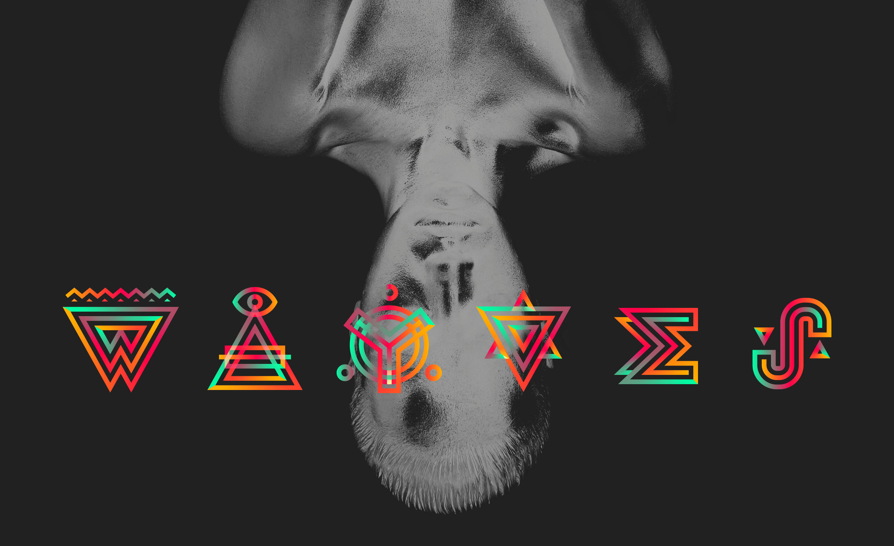
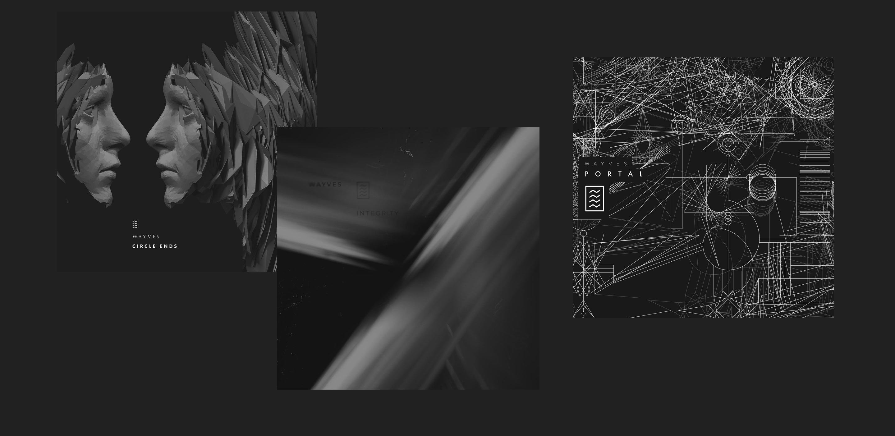
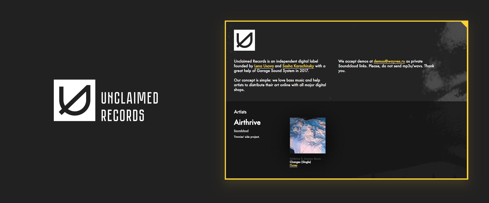
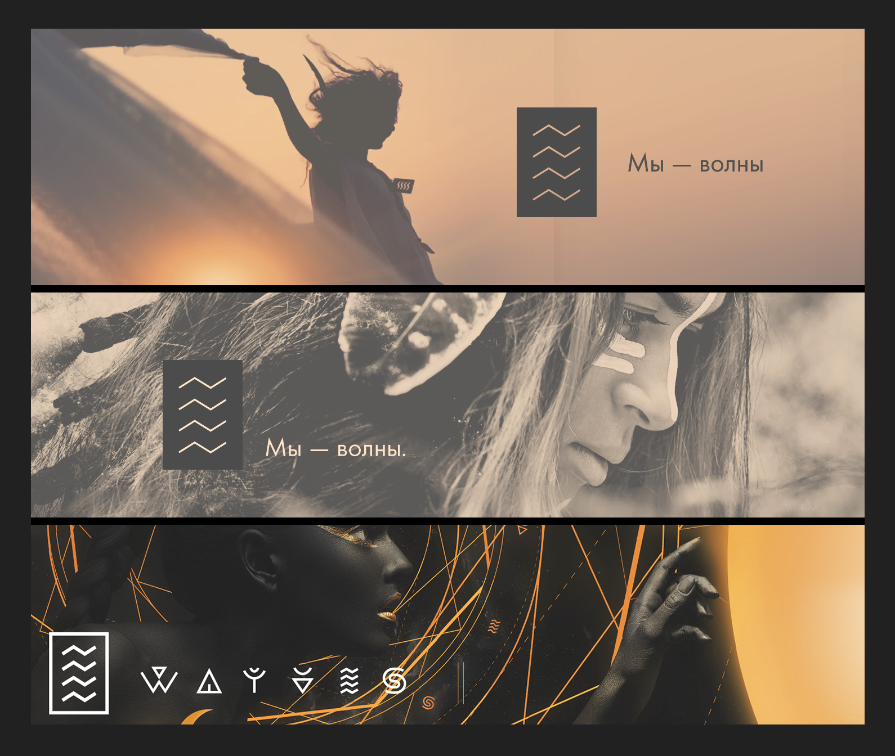

Background
WAYVES is a musical electronic acoustic project with a rich and constantly evolving visual history of the brand.
The naming is quite simple: WAY + WAVES. Path and waves. A very accessible life philosophy.
When the name was chosen, it was time to develop the sign. To my surprise, 4 broken lines symbolizing waves had not been used anywhere.
Here comes the logo:

Over the past two years, the sign has undergone slight changes and has gained elements of brand identity. Here is the very first version of 2015 with the slogan, which later becomes a hashtag.

The key to visual style is the covers of releases, made together with talented artists and photographers:

The music community gained popularity, which resulted in the launch the digital label Unclaimed Records in the fall of 2017. I developed a simple and memorable sign and a website-catalog of the musicians signed for the label:

A more elegant version of the logo (2016) and a frame from the music video.
